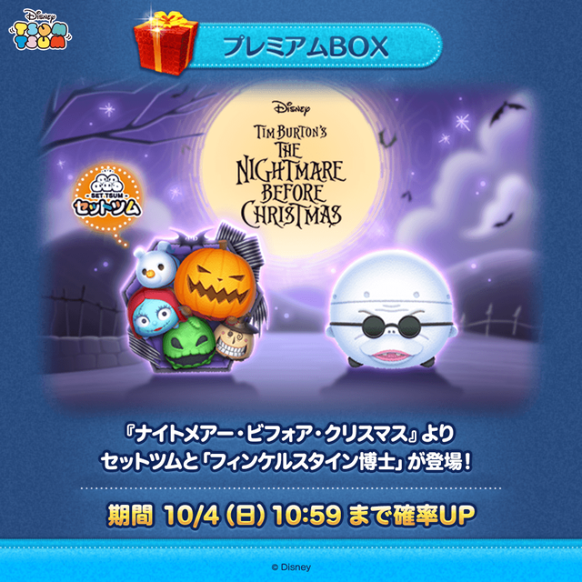
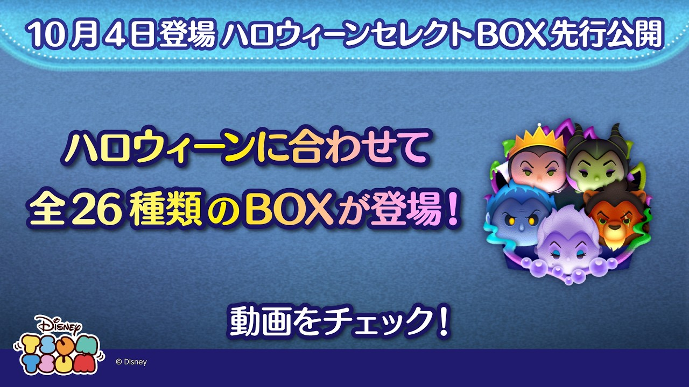

10月最新情報｜新ツム・ハロウィーンセレクトBOXまとめ
10月はナイトメアー・ビフォア・クリスマスの新ツムとハロウィーン企画。開催中の内容、これから登場するBOX、運営者のおすすめを分けてまとめました。

先に確認したい日程
| 期間・登場日 | 内容 | 10月3日時点 |
|---|---|---|
| 10月4日10:59まで | 新ツム2体の確率アップ | 開催中 |
| 10月31日23:59まで | 新ツムの登場期間 | 登場中 |
| 10月4日登場 | ハロウィーンセレクトBOX | 公式先行公開 |
| 10月1日11:00〜31日23:59 | 開かずの館からの脱出 | 開催中 |
| 10月10日11:00〜14日10:59 | ひろば「流れ星に願いをかけよう！」 | 開催予告 |
| 10月6日23:59まで | Xフォロー＆リポスト企画 | 開催中 |
新ツムの確率アップ終了と、ツム自体の登場終了は別です。セレクトBOXの終了時刻は先行動画だけでは確定できないため、登場後のゲーム内表示で確認してください。
新ツムはナイトメアーセットとフィンケルスタイン博士
期間限定の2体が10月1日に登場。セットツムはスキル中にコンボスキルを使えるタイプ、博士は自身をつなぐことでサリーによる横方向の消去が発生するタイプです。
ふめいだよの個人的な評価：ナイトメアーセットは最低1体確保！
ナイトメアー・ビフォア・クリスマス〈セット〉は、めちゃくちゃ強いです。自分の意見として、母体確保は必須。持っていない方は必ず引いてください！
10月の新ツムの中でも、自分がまずおすすめしたいのはこのセットツムです。先に最低1体を確保することを優先して、その後どこまで育てるかは手持ちのコインやチケットと相談するのが良いと思います。
ふめいだよのプレイ動画

ふめいだよ【ツムツム】 / YouTube

ふめいだよ【ツムツム】 / YouTube
どちらも自分のチャンネルに掲載したプレイ動画です。セットツムと博士で異なるスキルの動きや、実際のプレイの様子を確認できます。
10月4日登場・ハロウィーンセレクトBOX

公式動画で全26種類のBOXが予告されています。注目は初復活のディズニーヴィランズ〈セット〉。ロルカナティンカー・ベル〈変身〉も復活対象です。10月3日時点では予告であり、まだ開催中ではありません。
ふめいだよの個人的な評価：ヴィランズセット未所持なら引いてほしい
ヴィランズセットは初復活で、めちゃくちゃ強いです。持っていない方は必ず引いてください！自分がすすめたい理由は、性能だけではありません。
ツムツムタワー ヴィランズの開催に備えられることも大きいです。ヴィランズ系のツムを準備しておきたいので、このセットツムはめちゃくちゃ重宝すると思います。タワーを見据えても、未所持なら今回のBOXで確保を優先したい、というのが自分の意見です。
タワーは10月15日からの開催情報が出ています。開催日・対象ツム・使用条件はゲーム内の予告を再確認してください。開催情報の照合先：10月情報まとめ
ここでの「必ず引いて」は運営者個人のおすすめで、公式の推奨や入手保証ではありません。狙ったツムが出る保証はないので、使うコインの上限を決め、無理な課金はしないでください。
イベント・ひろば・キャンペーン
開かずの館からの脱出
ミッションで集めたキーアイテムを使い、部屋の仕掛けを解いて進めます。今月の新ツムにはキャラクターボーナスがあり、ピンズやスキルチケットなどの報酬を狙えます。
ひろば「流れ星に願いをかけよう！」
10月10日から開催予定。アイテムの効果が1回無料になる企画です。参加前にアプリを最新版へ更新してください。
ハロウィーン応募・キーワード探し
今日のミッションで応募券を集める企画は10月31日まで、応募期限は11月5日23:59です。キーワード探しは10月31日まで。公式SNSなどの8文字を集め、LINE公式アカウントのクイズまで正解するとプレミアムチケットを受け取れます。
Xフォロー＆リポスト
10月6日まで毎日参加できます。フォロー・対象投稿のリポストに加え、投稿内のリンクから抽選結果を確認するところまで行ってください。
そのほかの10月情報
タワー・月末イベント・ログインボーナス
ゲーム内予告を整理した10月情報まとめでは、以下の日程が案内されています。こちらは攻略情報との照合内容です。参加条件や最終的な日程は、ゲーム内の予告・お知らせで確認してください。
- ツムツムタワー ヴィランズ：10月15日11:00〜12月31日23:59の開催予定。ヴィランズ系の手持ちを準備しておきたいイベントです。
- ツムツムのお店やさん・ランタンショップ：10月27日11:00〜31日23:59の開催予定。この記事の確認時点では、まだ始まっていません。
- 前半ログインボーナス：10月1日〜15日23:59。期間内の12日分が対象と案内されています。メールBOXの取り忘れも確認してください。
LINE STOREの10月特別セール
10月1日付の公式お知らせに特別セールの案内があります。価格や対象条件は購入画面で確認してください。ガチャのおすすめは、課金が必要という意味ではありません。
引く前に自分ならこう確認する
まずナイトメアーセットを持っているか、次にヴィランズセットを持っているかを確認します。両方未所持なら、新ツムの確率アップ期限とセレクトBOXの開始を見ながら、確保用のコインを分けておきたいです。
すでに持っている方は、育成の優先順位が変わります。自分の記録を見てコイン稼ぎに使えているか、タワー用の手持ちが足りているかを判断してください。コイン統計に記録する / コイン稼ぎランキングを見る
今後の追加新ツム・ピックアップガチャなど、未発表の内容や予想の日付は確定情報として掲載しません。この記事は10月3日に確認できた内容です。
確認先
- LINE GAME公式ブログ：10月新ツム・イベント・キャンペーン
- ツムツム公式YouTube：10月4日セレクトBOX
- ツムツム公式X
- 公式お知らせ
- 攻略情報の照合：ハロウィーンセレクトBOX・初復活
日時は日本時間。公式告知画像は各公式発表からの引用で、当サイトの制作物ではありません。プレイ動画のサムネイルは、ふめいだよ【ツムツム】のYouTube動画から表示しています。開催状況・対象条件はゲーム内のお知らせを優先してください。